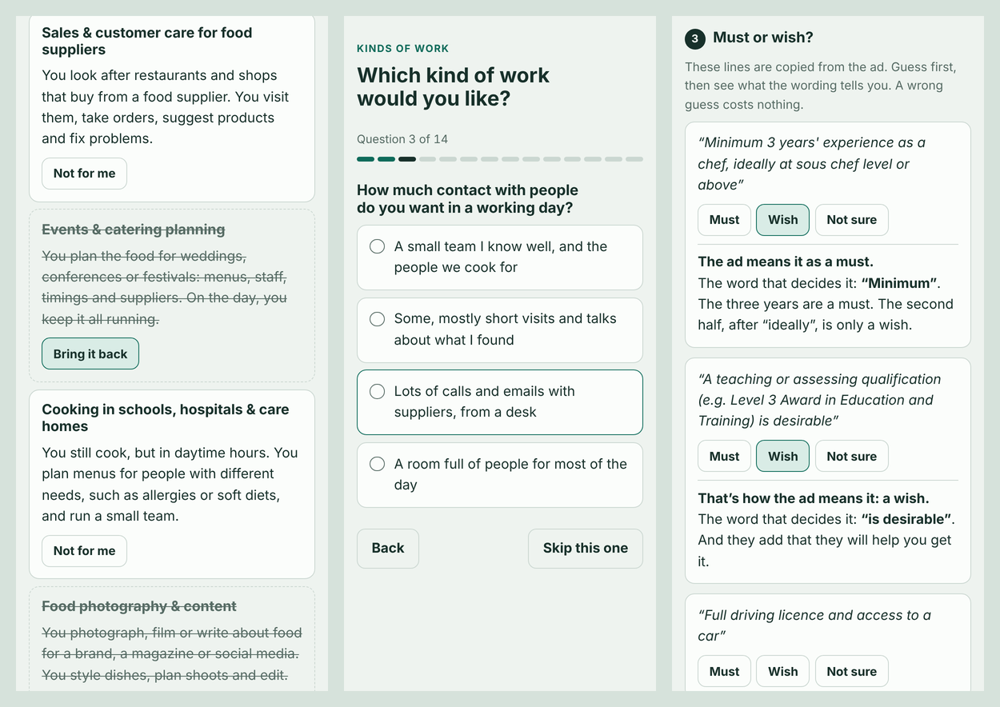

A free Claude skill
For the time before the job search.
When you don't know yet which kind of work you want, and job ads make it worse. Job Compass helps you find what appeals to you, what it's called, and how to read real job ads without the dread.

Why I built this
Most job tools start once you already know what you want.
They help with your CV, find matching ads or prepare you for interviews. But a lot of people get stuck before that. Say you've just finished university. You open a job site, type in your subject and get 300 results. Half the job titles don't tell you what the job is, and every ad lists ten requirements. You can't tell which of them really matter, or what you'd be doing all day.
Researchers call this career indecision. One of its main causes is simply missing information, both about yourself and about what jobs actually involve day to day (Gati, Krausz & Osipow, 1996).
I think school and university leave us badly prepared for this. I've met too many people who got stuck in a career they didn't really choose. AI has plenty of downsides, but this is a place where it can really help, because it tailors everything to you: your field, your background, and the ads that are open where you live right now.
How it works
Four short steps, a little less help each time.
Claude starts with a short conversation about what you've done, what you enjoyed and what you don't want. Then it builds a page for each step.
Kinds of work
About ten kinds of work, each described as a normal day. You cross out the ones that feel wrong.
A fair quiz
Only about what you'd enjoy, never what you can do. It ends with your search words: what the work is called.
Three real ads, translated
A normal week in plain words, the jargon explained, and every requirement marked as a must or a wish.
Three more, with less help
You read the original first, open only the words you want explained, and guess must or wish yourself.
At the end you get a short summary: what you liked, the words to search for, and one small next step if you want one. Each step also works on its own.
Try it
Click through the four example pages.
These were made for an invented person: a trained chef who wants daytime hours. The ads and companies are made up too. In real use, Claude makes the pages for you and finds real ads where you live.
Kinds of work
Cross out what feels wrong until 5 to 7 are left.
Step 2The quiz
14 quick choices and your search words at the end.
Step 3Three ads, translated
Pick the tasks that sound good and see the musts and wishes.
Step 4Three ads, with less help
Guess must or wish first, then compare.
Nothing you tap on these pages is sent anywhere. Your answers stay on your phone or computer.
The rules behind it
Small, safe steps.
- Preferences only.Nothing tests what you can do. You judge the jobs, they don't judge you.
- Nobody is applying today.This one sentence is what made reading ads feel safe.
- Three ads, not ten.The gentlest one first.
- Must or wish, early.Words like "preferred" or "is a plus" are easy to read as hard conditions. The pages teach the difference from the first ad on.
- Nothing is claimed about youthat you didn't say yourself.
- Plain language.Jargon only appears where it gets explained.
It isn't a psychological test or a career assessment, and it doesn't write CVs or send applications. Other tools do that well.
Get it
Free, and open source.
In the Claude apps
- Download
job-compass.zipfrom the latest release. - In Claude, go to Customize > Skills, click +, choose Create skill, then Upload a skill, and pick the zip.
- Make sure code execution is turned on (Settings > Capabilities).
You need a Claude plan where skills and code execution are available. The ad steps work best in the Claude desktop app or with Claude in Chrome, where Claude can read each ad word for word.
In Claude Code
Copy the job-compass folder from the repository into ~/.claude/skills/.
Then just say what's going on
"I finished my biology degree in June and I have no idea what job I want. Job ads just stress me out."
"My brother is a trained electrician and wants out of construction, but doesn't know what else he could do. Can you help me set something up for him?"
A helper can set it up for someone else. The pages work without a Claude account: the helper sends them on, and the person sends back what the page gives them.